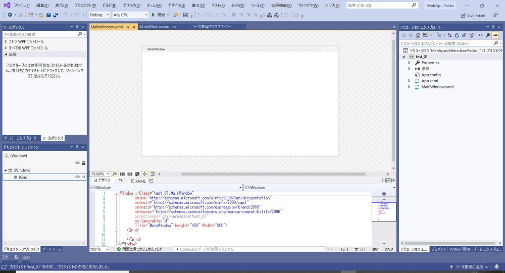

「MahApps.Metro.IconPacks」について記載します。
1. まずは使ってみる
2. IconPacks-Browser で使いたいアイコンを選ぶ
[概要] MahApps.Metro.IconPacks をとりあえず使ってみます。
[評価環境]
| コンパイラ : | Visual Studio 2019 pro., | Version 16.4.5 |
| OS: | Windows10 home, | Version 1909 |
| Parts: | MahApps.Metro.IconPacks, | v3.2.0 |
(1) WPF の新規プロジェクトを作成します。

(2) 「NuGet パッケージマネージャ」 で "MahApps.Metro.IconPack" をインストールします。
(3) 以下のようにコードを書いて、[F5]実行します。ここでは "Logos_500px" というアイコンを表示します。
[MainWindow.xaml]
<Window x:Class="test_01.MainWindow"
xmlns="http://schemas.microsoft.com/winfx/2006/xaml/presentation"
xmlns:x="http://schemas.microsoft.com/winfx/2006/xaml"
xmlns:d="http://schemas.microsoft.com/expression/blend/2008"
xmlns:mc="http://schemas.openxmlformats.org/markup-compatibility/2006"
xmlns:local="clr-namespace:test_01"
<!-- for IconPacks -->
xmlns:iconPacks="http://metro.mahapps.com/winfx/xaml/iconpacks"
mc:Ignorable="d"
Title="MainWindow" Height="450" Width="800">
<Grid>
<iconPacks:PackIconBoxIcons Kind="Logos_500px" />
</Grid>
</Window>すると、こんな感じで動作しました。
(4) あとはアイコンの位置と大きさ、ウィンドウの大きさ、などを調整します。
調整後の結果は以下の通り。これでいったん完成です。
[MainWindow.xaml]
<Window x:Class="test_01.MainWindow"
xmlns="http://schemas.microsoft.com/winfx/2006/xaml/presentation"
xmlns:x="http://schemas.microsoft.com/winfx/2006/xaml"
xmlns:d="http://schemas.microsoft.com/expression/blend/2008"
xmlns:mc="http://schemas.openxmlformats.org/markup-compatibility/2006"
xmlns:local="clr-namespace:test_01"
<!-- for IconPacks -->
xmlns:iconPacks="http://metro.mahapps.com/winfx/xaml/iconpacks"
mc:Ignorable="d"
Title="MainWindow" Height="300" Width="400">
<Grid>
<iconPacks:PackIconBoxIcons Kind="Logos_500px" Margin="100,100,0,0" Width="48" Height="48" />
</Grid>
</Window>
[概要]
IconPacks はとても多くのアイコンを持っています。"IconPacks-Browser" で使いたいアイコンを探して、自分が作成するアプリケーションで使えるようにしましょう。
[評価環境]
| コンパイラ : | Visual Studio 2019 pro., | Version 16.4.5 |
| OS: | Windows10 home, | Version 1909 |
| Parts: | MahApps.Metro.IconPacks, | v3.2.0 |
この辺（↓）から IconPacks-Browser を入手します。
IconPacks-Browser
https://github.com/MahApps/MahApps.Metro.IconPacks/wiki/IconPacks-Browser
https://github.com/MahApps/MahApps.Metro.IconPacks/releases/download/3.2.0/IconPacks.Browser.Release-v3.2.0-rc0007.zip
実行したときの画面様子は下図の通り。
「Copy *** to clipboard as element」 ボタンをクリックすると、
<iconPacks:PackIconOcticons Kind="Bug" />
というようなコードがクリップボードにコピーされます。
前の章で記載した例は、この形式です。
「Copy *** to clipboard as content」 ボタンをクリックすると、
{iconPacks:Octicons Kind=Bug}
というようなコードがクリップボードにコピーされます。
「Copy *** to clipboard as PathIcon element」 ボタンをクリックすると、
<iconPacks:PathIconOcticons Kind="Bug" />
というようなコードがクリップボードにコピーされます。
以上のような方法でこの IconPacks-Browser を使うことで、使いたいアイコンを上記のようにクリップボード経由で張り付けるだけで楽に自身のアプリケーションでアイコンを活用することができます。
記載： 木下英俊
2020/03/01 新規作成